An ecologically-inspired, environment-first coordination protocol for multi-agent AI teams.
No central node. No database. No credentials. Agents leave structured traces; the environment does the coordination.
dot_swarm is a layered toolkit. Every layer is opt-in — start with zero dependencies and add AI, security, roles, and federation only when you need them.
| Layer | Commands | Install |
|---|---|---|
| Core protocol | init status add claim done partial block ready handoff |
pip install dot-swarm |
| Situational awareness | ls explore report audit heal crawl |
base |
| Agent spawning | spawn — launch workers and roles in named tmux windows |
base |
| Scheduling & workflows | schedule workflow |
base |
| Cross-repo federation | federation |
base |
| Cryptographic signing | auto — every init generates an HMAC-SHA256 identity |
base |
| AI operations | ai session configure |
pip install 'dot-swarm[ai]' |
| Agent roles | role inspect — proof-of-work gate, inspector/supervisor roles |
base |
| MCP server | dot-swarm-mcp — Claude Code / Cursor / Windsurf native |
base |
Modern software teams run multiple AI coding agents simultaneously — Claude Code, Cursor, Windsurf, Gemini, opencode — across different repos and sessions. Without coordination:
Existing solutions require infrastructure that gets in the way:
The answer isn’t a better tracker. It’s a different model entirely.
In nature, complex coordination emerges without central controllers.
A bee queen does not dispatch workers or resolve conflicts. She emits chemical markers that encode colony state, and workers read those traces autonomously to decide what to do next. Ant colonies self-organize task specialization across hundreds of thousands of individuals through the same mechanism: indirect coordination through a shared medium. No bottleneck. No single point of failure. No credentials required.
The key property that makes this work: all members speak the same chemical language. Every worker interprets the environment the same way. The signal is the protocol.
dot_swarm applies this model directly to software agent fleets:
Agents that modify filesystem-native projects should leave traces in their environment for collaborative purposes, rather than reporting to a central node around which complicated systems must be arranged to prevent bottlenecks and data loss from information overload.
The .swarm/ directory is the shared medium. state.md is the pheromone trail.
BOOTSTRAP.md is the chemical language every agent reads first. Git is the transport.
Signals decay. swarm audit flags stale claims. memory.md entries are dated.
state.md timestamps tell any agent exactly how fresh the picture is.
This isn’t another markdown-based task tracker. It’s a multi-master, environment-first coordination protocol — inspired by six decades of stigmergy research, built for the reality that AI agent fleets need to self-organize across repos, sessions, and tools without a central authority managing them.
.swarm/ DirectoryEvery repository gets a .swarm/ directory. Five files are the protocol core:
| File | Role |
|---|---|
BOOTSTRAP.md |
Universal agent protocol — every agent reads this first |
context.md |
What this project is, its constraints, its architecture |
state.md |
Current focus, active items, blockers, handoff note |
queue.md |
Work items with claim stamps |
memory.md |
Non-obvious decisions and rationale (append-only) |
Additional opt-in files: trail.log (signed audit), schedules.md, workflows/,
federation/, roles/.
Work items use inline stamps for optimistic concurrency — no lock server needed:
## Active
- [>] [API-042] [CLAIMED · claude-code · 2026-03-26T14:30Z] Fix rate limiter memory leak
priority: high | project: infra
## Pending
- [ ] [API-043] [OPEN] Add distributed tracing to all endpoints
priority: medium | project: observability
depends: API-042
## Done
- [x] [API-041] [DONE · 2026-03-25T16:00Z] Migrate auth middleware to lifespan events
project: infra
swarm ready shows only items whose entire dependency chain is complete:
swarm ready # list what's safe to pick up right now
swarm ready --json # machine-readable, for agent scripts
Organization (your-company/) ← cross-repo initiatives
.swarm/
├── Division (service-a/) ← single-repo work
│ .swarm/
└── Division (service-b/)
.swarm/
Work items use level-prefixed IDs: ORG-001, API-042, MOB-017. Cross-division items
live at org level with refs: pointers in each affected division’s queue.
Use swarm ascend and swarm descend to check alignment across levels.
pip install dot-swarm
cd your-repo
swarm init # creates .swarm/ with signing identity
swarm add "Fix auth timeout" --priority high
swarm add "Add distributed tracing" --depends API-001
swarm ready # see what's unblocked right now
swarm claim API-001
# ... do work ...
swarm done API-001 --note "Used exponential backoff with jitter"
swarm handoff # structured summary for next agent/human
pip install 'dot-swarm[ai]'
swarm configure # set model + region once
swarm ai "what should I work on next?"
swarm ai "implement the auth module, then the markets module" --chain --max-steps 6
pip install dot-swarm
# Add to ~/.claude/mcp_config.json:
# { "mcpServers": { "dot-swarm": { "command": "dot-swarm-mcp" } } }
# dot_swarm state is now available as MCP tools in your IDE agent
# Enable inspector role — workers must prove completion before done
swarm role enable inspector --max-iterations 3 --require-proof "branch,commit,tests"
# Spawn a worker agent in a named tmux window (auto-claims the item)
swarm spawn API-042 --agent opencode
# Worker attaches proof then hands off to inspector
swarm partial API-042 --proof "branch:feature/rate-limiter commit:abc1234 tests:87/87"
# Spawn inspector and supervisor as dedicated role windows
swarm spawn --role inspector
swarm spawn --role supervisor
# Inspector passes or fails with a reason
swarm inspect API-042 --pass
swarm inspect API-042 --fail --reason "Edge case under burst traffic — see test_rate_limiter.py:98"
# If inspect_fails exceeds max_retries, item auto-BLOCKs and surfaces in audit
swarm audit --full
# Walk the working tree and build context for all divisions
swarm crawl # writes Directory Map to context.md
swarm crawl --create-items # also creates queue items for uncatalogued dirs
swarm heal # verify alignment after crawl
| Central-node approach | Swarm approach |
|---|---|
| Agents report in, wait for assignments | Agents read environment, self-assign |
| Server becomes single point of failure | .swarm/ files replicated by git |
| API credentials required per-agent | Plain file access, no auth layer |
| Context window dumps to external system | Context lives where the code lives |
| Bottleneck grows with fleet size | Throughput scales with number of agents |
| Complex de-duplication logic needed | Optimistic claims + audit resolves conflicts |
dot_swarm is distinct from Gastown/Beads in being multi-master (no Mayor bottleneck), feature-toggleable (every layer is opt-in), and federation-capable across separate repos and organizations via signed OGP-lite messages.
dot_swarm and Gastown solve overlapping problems with different tradeoffs:
| dot_swarm | Gastown + Beads | |
|---|---|---|
| Storage | Markdown + git | Dolt (version-controlled SQL) + SQLite |
| Coordination model | Multi-master stigmergy | Single Mayor per colony |
| Feature toggles | Every layer opt-in | Fixed architecture |
| Cross-org federation | OGP-lite signed messages | Single workspace |
| IDE integration | MCP server (native) | tmux sessions |
| Agent roles | inspector / watchdog / supervisor / librarian | Mayor / Polecats / Refinery / Witness / Deacon |
| Dependencies | Zero (stdlib + click + mcp) | Dolt + SQLite3 + tmux |
Both are inspired by Steve Yegge’s work and the broader stigmergy literature. dot_swarm was specifically designed to work in environments where you cannot install a database, and where no single agent should be a required coordinator.
Cryptographic identity. Every swarm init generates a per-swarm HMAC-SHA256
signing identity stored in .swarm/.signing_key (gitignored). All AI operations are
signed and appended to trail.log, creating a tamper-evident audit chain.
Adversarial content scanning. swarm heal and swarm audit --security scan all
.swarm/ files and platform shims (CLAUDE.md, .cursorrules, etc.) for 18 patterns
across three severity levels:
| Level | Examples |
|---|---|
| CRITICAL | instructions to exfiltrate data, override safety rules, impersonate agents |
| HIGH | prompt injection in memory/context files, fake claim stamps |
| MEDIUM | ambiguous authority claims, unusual base64-encoded content |
Drift detection. swarm audit --drift flags any .swarm/ file whose content
diverges from the signed trail — the earliest signal that an agent has written
something outside the normal protocol flow.
Trail visibility control. swarm trail invisible (the default on swarm init)
adds .swarm/ to .gitignore so your coordination history doesn’t leak when you
push code. Run swarm trail visible only when you want to share the trail explicitly.
Shared medium poisoning. The .swarm/ directory is the coordination medium — a
malicious agent that can write to it can influence every other agent that reads it.
This is the fundamental tradeoff of any stigmergic system. Mitigations: adversarial
scanner, signed trail, swarm heal as a continuous integrity pass.
HMAC is local-trust only. The signing key is per-swarm and never shared. This protects trail integrity within a swarm but provides no cross-swarm authentication. An Ed25519 upgrade path is documented; HMAC was chosen for zero-dependency stdlib compatibility.
Trail sharing equals history sharing. If you run swarm trail visible and push,
your full coordination history — every claim, handoff note, and memory entry — goes
with it. The default is invisible for this reason.
Live federation is not yet implemented. Cross-swarm coordination currently works via file-based OGP-lite signed messages, not live network connections. Real-time inter-swarm signaling is planned if the userbase warrants it.
LLM content is a trust boundary. Content written by an LLM into memory.md or
notes: fields can influence future agents that read those files. The adversarial
scanner reduces but does not eliminate this risk — novel injection patterns may evade
static rules. Treat swarm heal as a necessary hygiene step after any agentic run.
See CLI Reference → Security & Trust Model for full command reference.
Inspired by Steve Yegge’s “Welcome to Gas Town” and grounded in stigmergy research spanning six decades, from Grassé’s termite mound studies (1959) through Dorigo’s Ant Colony Optimization (1996) to Bonabeau, Dorigo & Theraulaz’s Swarm Intelligence (1999).